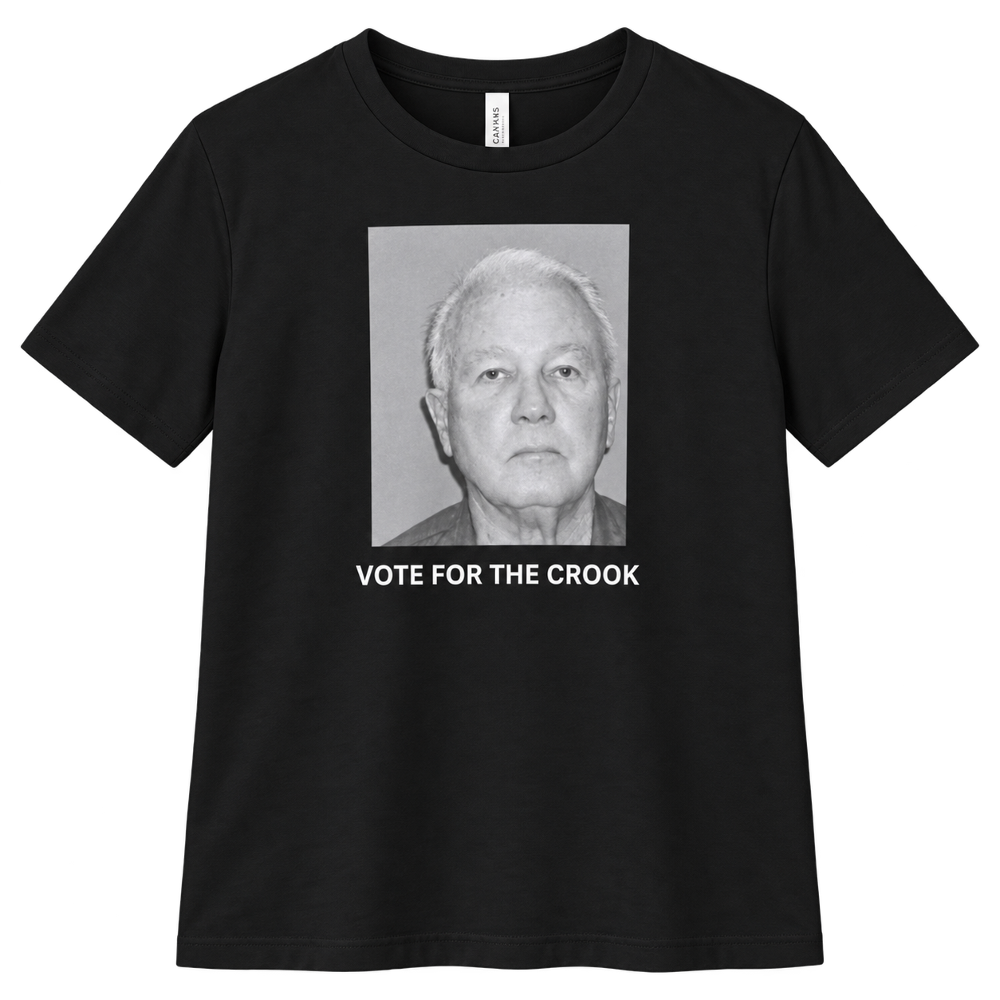
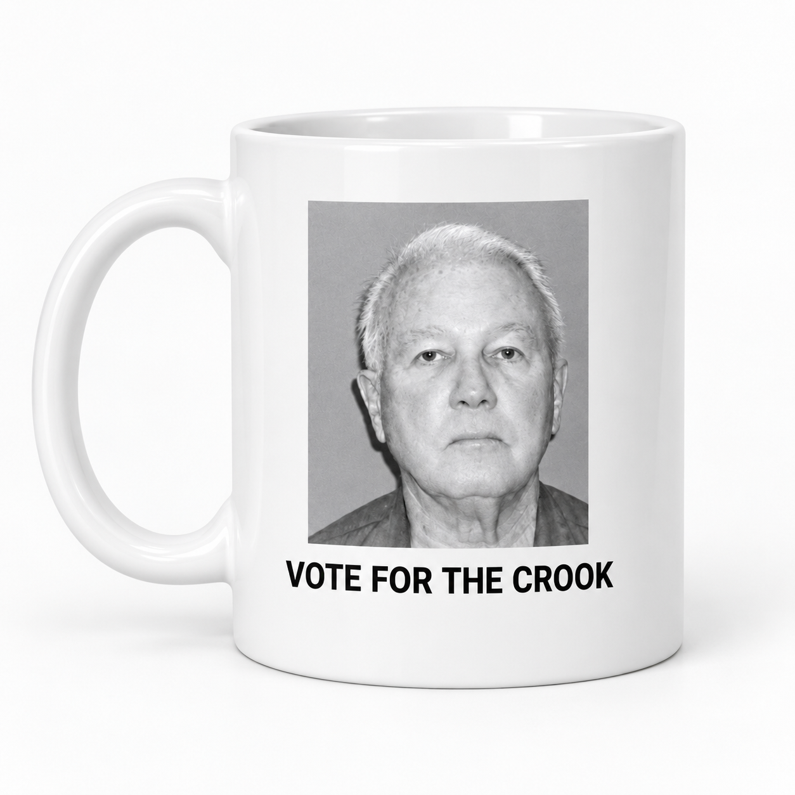

During his 1991 runoff against David Duke, bumper stickers declared “Vote for the Crook. It’s Important.”—one of Louisiana politics’ most memorable slogans.
We obtained Governor Edwin Edwards’ 2000 mugshot through a FOIA request. It has never been published.
Edwards was convicted of federal racketeering, extortion, and fraud charges involving Louisiana’s riverboat-casino licensing, and sentenced to 10 years in prison.
With a stubborn demand for something better, a portion of every purchase supports people stepping forward to run for office.

